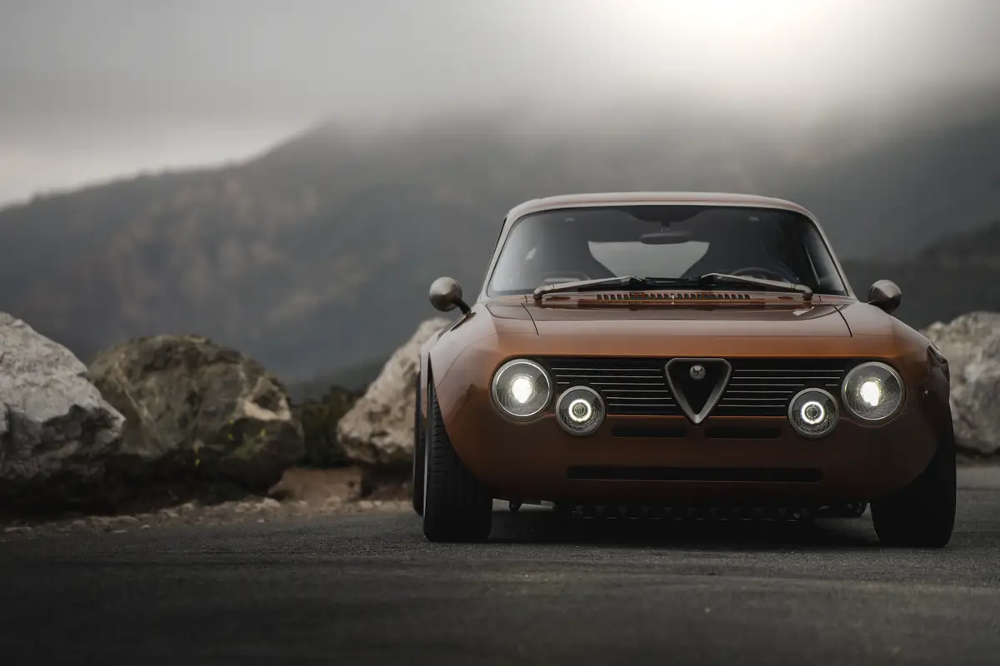
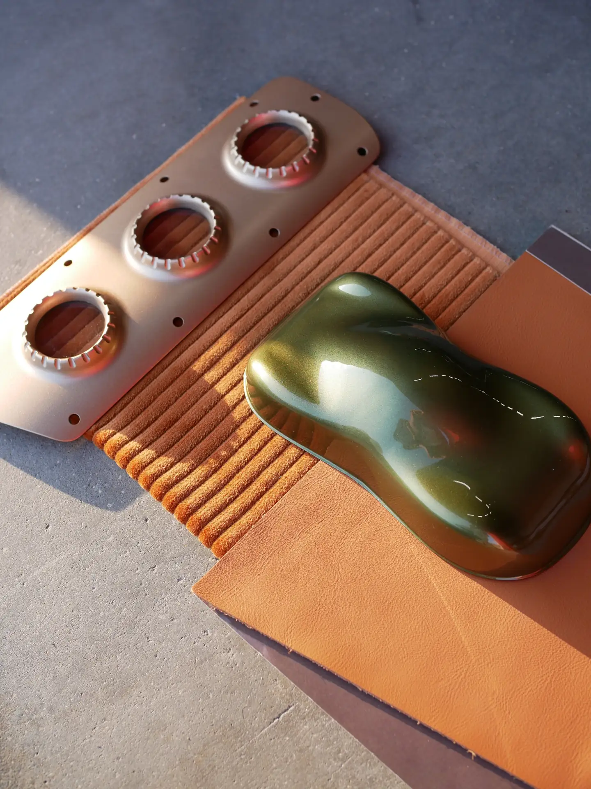
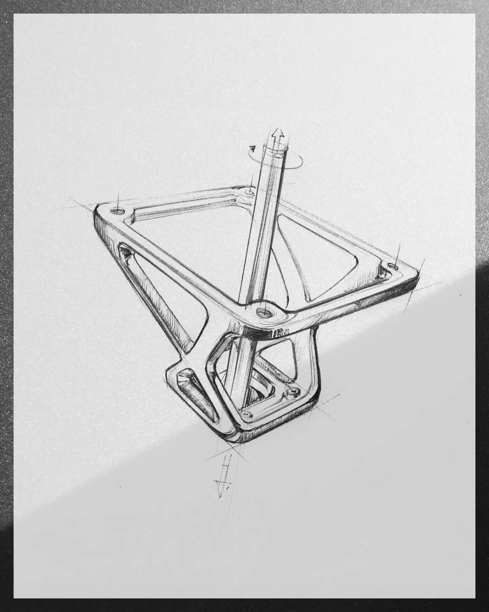
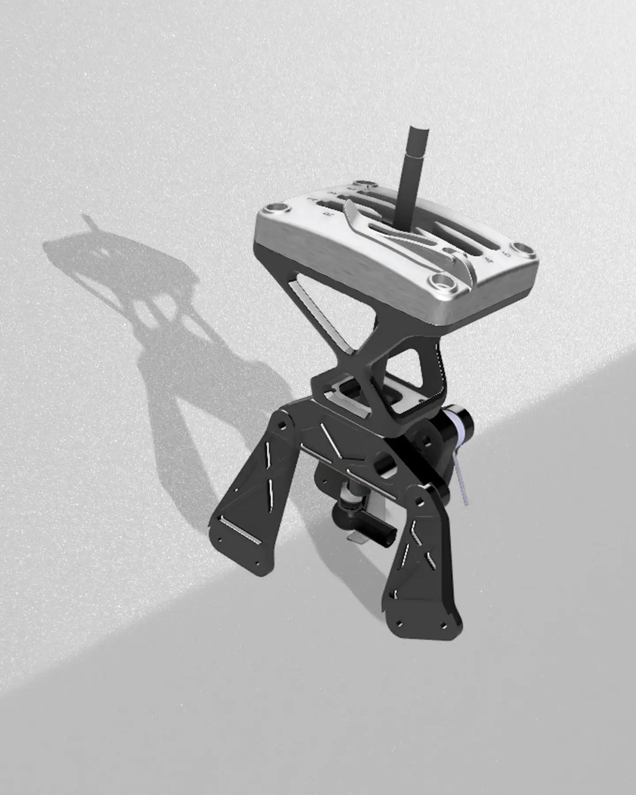
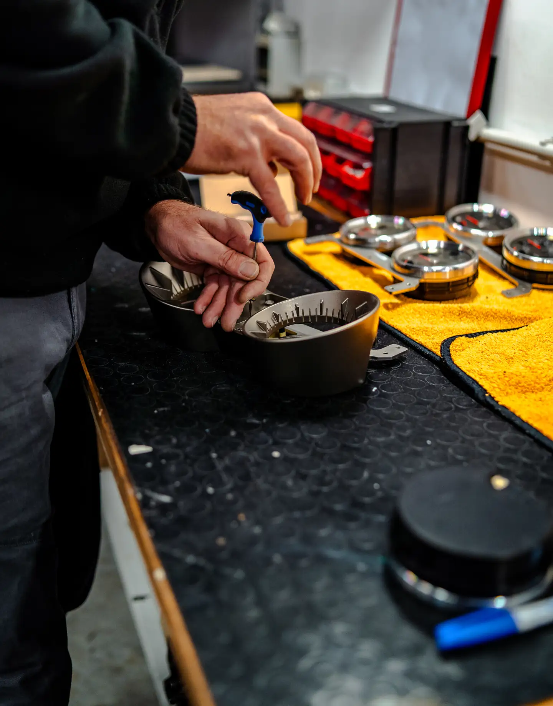
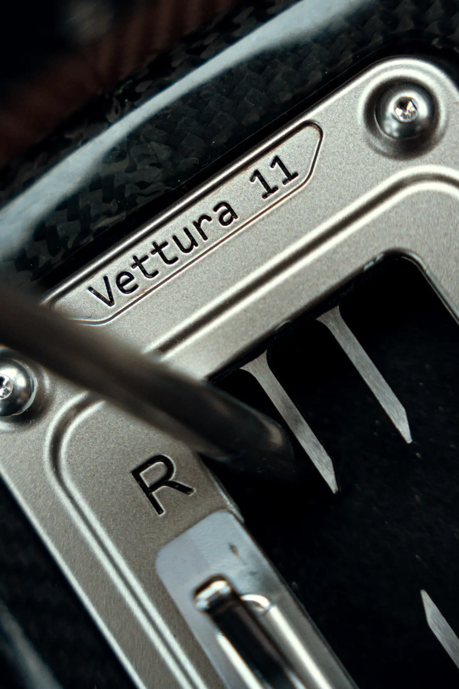
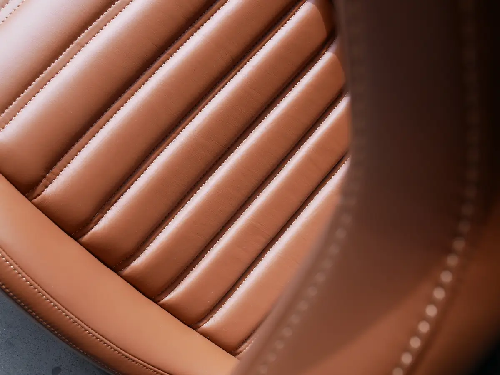

Paint
More than forty shades, or a colour developed with the client and reserved to a single car.

The ultimate expression of bespoke personalisation.
Through the Totem Individual Program each client works with our design and engineering teams on a car of entirely bespoke technical and aesthetic character.
There is no list of what may be asked for. Any material, any finish, a collaboration with a house the client loves, a detail that exists nowhere else: each request is studied, engineered and crafted in our atelier, and the plaque records it.
Five moments shape every commission.

01
A car, a memory, a place: every commission begins as a conversation, and a colour is chosen on a sample.

02
The request is drawn by hand, for one car only.

03
Each part is engineered in-house, so it belongs to the car rather than being added to it.

04
Metal is machined from solid, hides are cut and stitched, carbon is laid by hand.

05
The finished car carries its number and its name, engraved.
A selection from the cars that have already left the atelier. Each object was made for one car, and exists on no other.
More than forty shades, or a colour developed with the client and reserved to a single car.
Hides quilted, pleated and stitched by hand; wools woven in houndstooth and Prince of Wales check.
Carbon laid in the weave of the client’s choosing; every piece of brightwork finished in gold, bronze, nickel or noir.
Machined from a billet, rimmed in wood or leather, finished with a hub that exists on one car.
Millefiori and amber glass, turned wood and aluminium, set over an open gate.
Naples silk, printed for Totem, set between the pleats of the seats and wrapped around the door pulls.
Check cloth around the speakers, a front compartment quilted to measure.
Every Totem carries an engraved plaque. On an Individual commission it bears the name of the car, the words “Vettura 1 of 1” and the wishes that made it unique.
Colours developed with the client and reserved to a single car.
Leathers, silks, woods, metals and weaves chosen piece by piece.
Houses the client loves, from Naples silk to Murano glass, for Totem.
